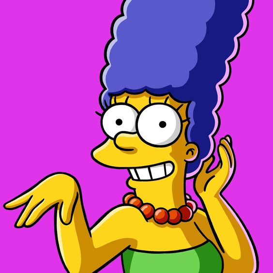
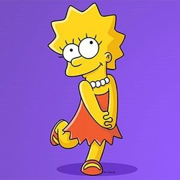
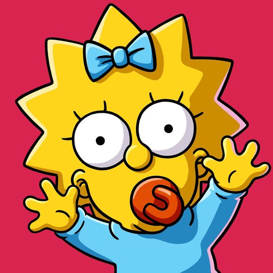

Homero Simpson
|
- Homero Simpson es el único personaje de Los Simpson que tiene diálogo en todos los episodios.
- A pesar de que su empleo más conocido es el de la planta nuclear, también ha trabajado en muchas cosas como de guardaespaldas, concejal, ejecutivo, mascota
de un club de béisbol, etc hasta alcanzar la cifra de 188 empleos en lo que va de la serie
- El cabello de Homero tiene una M y su oreja forma una letra G estas son las iniciales del creador del personaje Matt Groening.
- Su tipo de sangre es B Positivo
|
Marge Simpson

|
- Marge conoció a Homero en un curso de verano cuando ambos tenían 10 años
- De joven estudiaba arte y cursos de compostura de calzado
- Es fanática de The Beatles en especial de Ringo Starr
- Su padre era francés por eso su apellido es Bouvier
- Es la única en la familia Simpson que participa activamente en la Iglesia.
- Durante su época en secundaria, fue activista por un corto tiempo.
- Sus comidas favoritas son: Tallarines con manteca, papas a la juliana y duraznos (melocotones) natural.
|
Bart Simpson
|
- Bart ha salido con Jessica Lovejoy, Greta Wolfcastle, Gina Vendeti, Darcy, Jenny, Nikki Mackena y Jenda (esta última es una novia del futuro). En Futudrama, el profesor Frink le dice que encontrará el verdadero amor a los 83 años, y al minuto morirá..
- La primer frase que ha dicho es: ¡Ay caramba!.
- En un capítulo, Marge consume una gota de champagne, mientras estaba embarazada, provocando la maldad y las puntas de pelo de Bart.
- En "Bart the Fink" escribe un cheque lo hace con la mano izquierda, haciendo presumir que es zurdo
- Bart tuvo una banda con Milhouse, Nelson y Ralph, pero en realidad ellos no cantaban sólo era playback.
|
Lisa Simpson

|
- Es la budista más joven de Springfield
- En las primeras temporadas, (contando los cortos) Lisa tenía 9 puntas en su cabello y actualmente tiene 8.
- En un capítulo se cree que la niña gema es Lisa debido a un alma y corazon puro, ella pregunta si es pura al haber besado a Milhouse, por lo que todos dicen que no, pero también ha besado a Nelson.
- Su poetisa favorita como se ha mencionado varias veces es Emily Dickinson
|
Maggie Simpson

|
- Ella también podria ser Abbie Simpson, su segundo nombre es Abigail. Sin embargo, la media hermana de Homer también se llama así.
- En la mayoría de los episodios existen escenas en las que aparece la familia sin Maggie, la explicación de su ausencia es que ella está siendo cuidada por sus tías Patty y Selma o está en una guardería, también se dice que está con el abuelo.
|